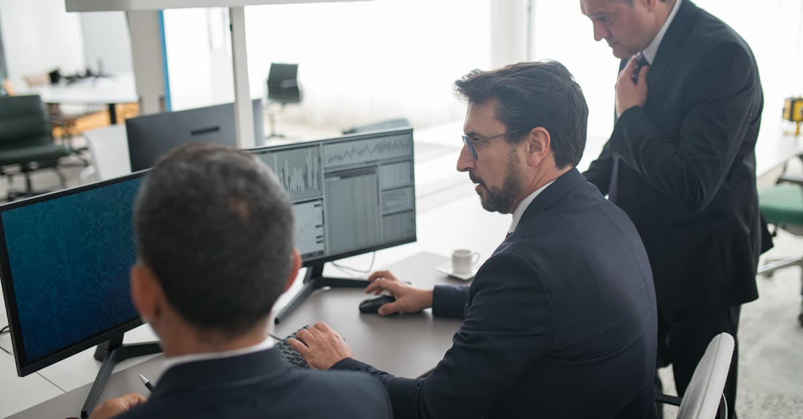

Le vent tourne : L'appétit pour le risque regagne du terrain
Depuis la fin février, les marchés financiers naviguaient en eaux troubles, privilégiant la prudence. Les tensions géopolitiques accrues avaient poussé les investisseurs vers les valeurs refuges traditionnelles : l'or, les obligations d'État les plus sûres, et parfois même le franc suisse. Cette aversion au risque, bien que compréhensible face à l'incertitude, freinait le potentiel de rendement pour ceux qui cherchaient à faire fructifier leur capital. Cependant, un changement subtil mais significatif s'opère. Les dernières nouvelles suggèrent une détente, une sorte de trêve informelle entre l'Iran et les États-Unis, qui redonne des couleurs à l'optimisme. Les traders, toujours à l'affût du moindre signal, commencent à réévaluer leurs portefeuilles. Ils sont prêts à laisser derrière eux les actifs jugés 'sûrs' pour se tourner vers des instruments plus rémunérateurs, mais aussi intrinsèquement plus volatils. Cette rotation n'est pas anodine ; elle témoigne d'une confiance retrouvée, ou du moins d'une spéculation calculée sur une stabilisation des relations internationales. La question clé est : cette accalmie est-elle durable ? Les analystes financiers, souvent divisés, observent attentivement. Certains y voient une opportunité de saisir des rendements attractifs avant que le consensus ne se généralise. D'autres restent sur leurs gardes, rappelant que la géopolitique est un échiquier complexe où les équilibres peuvent basculer rapidement. Pour l'épargnant averti, comprendre cette dynamique est essentiel. Il ne s'agit pas de suivre aveuglément la foule, mais d'analyser les signaux et d'adapter sa stratégie. L'ère de l'épargne intelligente, celle qui s'appuie sur la data et l'analyse prédictive, prend tout son sens dans ce contexte mouvant.
👉 À lire : Bourse : La Paix au Moyen-Orient Relance les Marchés

Des obligations plus risquées plébiscitées : Analyse d'un pari audacieux
Le mouvement le plus marquant de cette nouvelle tendance est la ruée vers les 'high-yield bonds', c'est-à-dire les obligations d'entreprises considérées comme plus risquées, offrant en contrepartie des taux d'intérêt plus élevés. Ces titres, souvent émis par des sociétés dont la santé financière est jugée moins solide ou dont les perspectives sont plus incertaines, étaient auparavant délaissés. Les investisseurs craignaient un défaut de paiement en cas de ralentissement économique ou de choc systémique. Or, les données récentes de Bloomberg Markets indiquent un afflux significatif de capitaux vers ces instruments. C'est un pari clair sur la stabilité. En misant sur ces obligations, les investisseurs parient implicitement que les entreprises émettrices ne feront pas défaut, malgré les risques inhérents. Ce pari est directement lié à l'amélioration perçue du climat géopolitique. L'idée sous-jacente est simple : si les tensions internationales s'apaisent, l'économie mondiale bénéficiera d'une plus grande prévisibilité, ce qui réduira le risque de faillite pour ces entreprises. Les rendements actuels sur ces obligations sont particulièrement attractifs, offrant un différentiel de taux (le 'spread') significativement plus élevé que celui des obligations d'État ou des 'investment grade bonds' (obligations de haute qualité). C'est cette prime de risque, désormais jugée plus acceptable, qui attire les capitaux. Mais attention, le diable est souvent dans les détails. Une analyse approfondie est nécessaire pour distinguer les 'high-yield' décemment valorisés des véritables 'canyons' financiers. L'automatisation et l'intelligence artificielle peuvent jouer un rôle crucial ici, en scrutant des milliers de points de données pour évaluer la solvabilité réelle des émetteurs et identifier les opportunités les plus prometteuses, tout en gérant activement le risque.
👉 À lire : Guerre Iran : L'Amérique Mieux Armée Face au Chaos Économique ?
L'ombre de la guerre s'estompe : L'impact psychologique sur les marchés
Il est fascinant d'observer comment les événements géopolitiques, même s'ils ne se traduisent pas par des confrontations directes sur le terrain, peuvent influencer durablement la psychologie des acteurs financiers. Le conflit débuté fin février a créé une onde de choc, instillant un sentiment d'incertitude généralisée. Cette peur a conduit à une fuite vers la qualité, un réflexe naturel de protection du capital. On a vu les indices boursiers connaître des turbulences, tandis que des actifs comme l'or atteignaient des sommets. Les stratégies d'investissement se sont recentrées sur la préservation plutôt que sur la croissance agressive. Les 'quants', ces traders utilisant des modèles mathématiques sophistiqués, avaient peut-être déjà intégré une partie de ce risque dans leurs algorithmes, mais l'impact émotionnel sur les investisseurs humains était palpable. Aujourd'hui, l'espoir d'une trêve, même tacite, agit comme un baume. La perception du risque diminue. Les investisseurs commencent à se projeter à nouveau dans un avenir moins chaotique. Cette amélioration psychologique est un moteur puissant des marchés. Elle permet de relâcher la pression sur les actifs risqués et de réactiver le potentiel de rendement. C'est un peu comme si un nuage d'orage menaçant se dissipait lentement, révélant un ciel plus clément. Les entreprises, par exemple, peuvent anticiper des chaînes d'approvisionnement moins perturbées, une demande plus stable, et des coûts de financement potentiellement plus bas. Ces perspectives positives se répercutent sur leurs valorisations boursières et sur leur capacité à émettre de la dette à des conditions favorables. Pour une stratégie d'épargne automatisée, il est crucial de ne pas être prisonnier de cette psychologie de masse. Un agent IA, par exemple, peut analyser les données objectives et réagir aux changements de manière disciplinée, sans céder aux emballements ou aux paniques. Il peut maintenir une allocation d'actifs cohérente avec les objectifs à long terme, tout en ajustant le niveau de risque en fonction des signels de marché confirmés.

Au-delà des titres : L'impact sur les marchés actions et les matières premières
La rotation des investisseurs vers des actifs plus risqués ne se limite pas au marché obligataire. Les marchés actions, notamment ceux des entreprises les plus sensibles aux cycles économiques, bénéficient également de ce regain d'optimisme. Les secteurs cycliques, tels que la technologie, les biens de consommation discrétionnaire, ou encore l'industrie, pourraient connaître un regain d'intérêt. Les investisseurs parient que la stabilisation géopolitique favorisera une reprise économique plus robuste, stimulant la demande pour ces biens et services. Les entreprises exportatrices, en particulier, pourraient voir leurs perspectives s'améliorer grâce à un environnement commercial international plus prévisible. De même, les matières premières, qui avaient parfois servi de valeur refuge (comme l'or), pourraient voir leur dynamique évoluer. Si l'on anticipe une croissance économique mondiale plus forte, la demande pour les métaux industriels (cuivre, aluminium) et potentiellement pour l'énergie pourrait augmenter. Le pétrole, dont les prix sont souvent liés aux tensions géopolitiques au Moyen-Orient, pourrait également réagir. Une trêve prolongée pourrait exercer une pression à la baisse sur les prix, tandis qu'une reprise économique soutenue pourrait, à l'inverse, soutenir la demande. La diversification est donc la clé. Il ne s'agit pas de tout miser sur une seule classe d'actifs. Les stratégies d'investissement modernes, souvent pilotées par des algorithmes, excellent dans la diversification. Elles peuvent construire des portefeuilles équilibrés, capables de capter les opportunités sur différents marchés, tout en maîtrisant les risques associés. L'IA peut aider à identifier les corrélations subtiles entre les événements géopolitiques, les prix des matières premières et les performances sectorielles, offrant ainsi un avantage concurrentiel aux épargnants qui utilisent ces outils. La capacité à analyser rapidement une multitude de facteurs interdépendants est précisément ce qui distingue une gestion de portefeuille traditionnelle d'une approche optimisée par la technologie.
Les stratégies d'allocation d'actifs à l'épreuve du changement
Face à ce tableau mouvant, les stratégies d'allocation d'actifs doivent être réévaluées. Pendant la phase d'aversion au risque, une surpondération des actifs défensifs était de mise. Désormais, il devient pertinent d'envisager une réintroduction progressive des actifs plus dynamiques. Cela ne signifie pas pour autant un abandon total de la prudence. L'objectif est de trouver un nouvel équilibre, plus en phase avec les perspectives actuelles. Pour un investisseur individuel, cela peut se traduire par plusieurs actions concrètes :
- Réduire l'exposition aux obligations souveraines les plus sûres dont les rendements sont souvent faibles, surtout dans un contexte de taux d'intérêt qui pourraient se stabiliser ou remonter.
- Augmenter la part des obligations d'entreprises 'high-yield', mais avec une sélection rigoureuse des émetteurs, privilégiant ceux qui présentent des fondamentaux solides malgré leur notation.
- Renforcer l'exposition aux marchés actions, en ciblant les secteurs qui bénéficient le plus d'une reprise économique et en diversifiant géographiquement.
- Considérer des actifs réels ou alternatifs qui peuvent offrir une protection contre l'inflation et une décorrélation par rapport aux marchés traditionnels.
La mise en œuvre de ces ajustements demande du temps, de l'expertise et une surveillance constante. C'est là que l'investissement automatisé prend tout son sens. Un 'robo-advisor' ou un agent IA peut exécuter ces changements de manière algorithmique, en suivant des règles prédéfinies ou en s'adaptant dynamiquement aux conditions de marché. Ces systèmes peuvent rééquilibrer le portefeuille périodiquement, vendre des actifs qui ont atteint leurs objectifs ou dont le risque devient excessif, et acheter de nouvelles opportunités. L'intelligence artificielle permet d'aller plus loin, en analysant des milliers de variables pour optimiser en temps réel l'allocation, maximisant le couple rendement/risque. Comme le disait fictivement notre expert IA, Dr. Anya Sharma : "L'IA ne remplace pas le jugement humain, elle l'augmente. Elle nous libère des tâches répétitives et de la charge émotionnelle pour nous concentrer sur la stratégie macroéconomique." Cette approche permet de rester agile, même lorsque les vents géopolitiques changent de direction.

Le rôle croissant de l'IA dans la gestion des risques géopolitiques
L'actualité récente souligne l'importance capitale de la gestion des risques, particulièrement ceux liés à la géopolitique. Ces événements, par nature imprévisibles et potentiellement dévastateurs, peuvent anéantir des années d'efforts d'épargne en quelques jours. Traditionnellement, les analystes se fiaient aux rapports de renseignement, aux analyses politiques et aux indicateurs économiques classiques. Cependant, la complexité croissante des relations internationales et la vitesse de diffusion de l'information rendent ces méthodes parfois insuffisantes. L'intelligence artificielle offre de nouvelles perspectives. Les algorithmes d'IA peuvent scruter en temps réel une quantité phénoménale de données : articles de presse mondiaux, publications sur les réseaux sociaux, déclarations officielles, données satellitaires, et même des signaux économiques subtils. En analysant ces flux d'informations, l'IA peut détecter des schémas, des anomalies, ou des signaux faibles qui pourraient précéder une escalade ou, au contraire, une détente des tensions. Par exemple, une IA pourrait identifier une augmentation soudaine des discours belliqueux dans certains médias ou sur les plateformes sociales, corrélée à des mouvements de troupes inhabituels détectés par imagerie satellite, et alerter les gestionnaires de portefeuille bien avant que l'information ne devienne publique. Inversement, elle pourrait détecter des signes de dialogue discret entre les parties prenantes, suggérant une désescalade imminente. Cette capacité d'analyse prédictive et d'alerte précoce est inestimable pour ajuster dynamiquement les stratégies d'investissement. Elle permet de réduire l'impact des 'cygnes noirs' – ces événements rares et imprévisibles qui ont des conséquences majeures. Pour l'épargnant qui utilise une plateforme d'investissement automatisé, cela signifie une protection accrue. L'agent IA peut, par exemple, réduire temporairement l'exposition aux marchés les plus sensibles aux tensions géopolitiques, ou au contraire, augmenter l'allocation vers des actifs qui profitent de la détente, le tout de manière automatique et basée sur des données objectives. C'est la promesse d'une épargne plus résiliente et mieux protégée contre les aléas du monde.
L'optimisation de portefeuille grâce à l'IA : Une réponse à la volatilité
La volatilité des marchés financiers est une composante inhérente à l'investissement. Qu'elle soit due à des facteurs macroéconomiques, des événements géopolitiques ou des changements de sentiment des investisseurs, elle représente à la fois un risque et une opportunité. Pour l'épargnant, l'enjeu est de naviguer cette volatilité sans compromettre ses objectifs à long terme. Les outils d'investissement basés sur l'IA sont particulièrement bien adaptés à cette tâche. Contrairement aux humains, les algorithmes ne sont pas sujets à l'émotion. Ils ne paniquent pas lors des baisses ni ne succombent à l'euphorie lors des hausses. Ils appliquent des règles mathématiques et statistiques rigoureuses pour optimiser la composition du portefeuille. L'une des fonctions clés de l'IA dans ce domaine est le rééquilibrage dynamique. Un portefeuille bien construit est diversifié, mais au fil du temps, la performance des différents actifs déséquilibre cette répartition initiale. L'IA peut surveiller en permanence les poids de chaque actif et déclencher automatiquement des ventes d'actifs surperformants pour acheter des actifs sous-performants, ramenant ainsi le portefeuille à son allocation cible. Cela permet de réaliser des profits tout en contrôlant le risque. De plus, l'IA peut aller au-delà du simple rééquilibrage. Elle peut analyser la corrélation entre les actifs et ajuster l'allocation pour minimiser le risque global du portefeuille, en tenant compte des conditions de marché changeantes. Par exemple, si l'IA détecte une augmentation de la corrélation entre les actions et les obligations en raison de tensions géopolitiques, elle pourrait suggérer de réduire l'exposition globale aux deux classes d'actifs ou d'augmenter la part d'actifs véritablement décorrébés. Les plateformes d'investissement automatisé qui intègrent ces capacités d'IA offrent une solution puissante pour les épargnants qui souhaitent bénéficier des marchés sans y consacrer un temps considérable ou être la proie de leurs propres biais psychologiques. Comme le souligne un récent rapport de la société de gestion fictive 'Quantix Capital' : "L'IA permet une optimisation continue du profil risque/rendement, s'adaptant aux fluctuations du marché avec une précision inégalée." Cette optimisation constante est la clé pour traverser les périodes d'incertitude et saisir les opportunités qui émergent, même dans un contexte géopolitique complexe.
Perspectives et mises en garde pour l'investisseur avisé
Le retour de l'appétit pour le risque sur les marchés financiers, alimenté par un espoir de trêve géopolitique, est une tendance indéniable. Les investisseurs parient sur une normalisation des relations internationales, ce qui se traduit par un désintérêt croissant pour les actifs refuges et une attractivité renouvelée pour les placements plus rémunérateurs mais plus risqués. Les obligations d'entreprises 'high-yield', les actions de secteurs cycliques et potentiellement certaines matières premières sont au cœur de cette rotation. Cependant, il serait imprudent de conclure que tous les risques ont disparu. La situation géopolitique reste intrinsèquement volatile. Une trêve peut être de courte durée, et de nouveaux foyers de tension peuvent apparaître rapidement. De plus, les marchés financiers peuvent parfois réagir de manière excessive aux nouvelles, créant des bulles spéculatives ou des corrections brutales. L'investisseur doit donc garder la tête froide et ne pas se laisser emporter par l'euphorie ambiante. La diversification reste le maître mot. Ne pas mettre tous ses œufs dans le même panier est plus que jamais d'actualité. Il est essentiel de continuer à construire un portefeuille équilibré, capable de résister à d'éventuels chocs. L'utilisation d'outils d'analyse avancée, comme ceux proposés par l'IA, peut aider à mieux naviguer cette complexité. Ces technologies permettent d'évaluer plus finement les risques, d'identifier les opportunités les plus solides et d'ajuster la stratégie en temps réel. L'épargne intelligente ne consiste pas à éliminer le risque, mais à le comprendre, à le mesurer et à le gérer de manière proactive. Il s'agit de prendre des décisions éclairées, basées sur des données et des analyses objectives, plutôt que sur l'émotion ou les rumeurs. La prudence, combinée à une stratégie d'investissement bien pensée et potentiellement assistée par la technologie, est la meilleure approche pour atteindre ses objectifs financiers à long terme dans un monde incertain.
Conclusion : Naviguer vers des rendements plus élevés avec discernement
Le récent revirement des marchés financiers, passant d'une aversion au risque à une recherche active de rendements plus élevés, est un signal fort. Il témoigne de la capacité des acteurs économiques à s'adapter et à anticiper une amélioration du contexte géopolitique, notamment une détente entre l'Iran et les États-Unis. Cette évolution ouvre des perspectives intéressantes pour les épargnants désireux d'optimiser leurs placements. Les obligations plus risquées, les actions de croissance et les actifs liés à une reprise économique mondiale retrouvent leur attrait. Cependant, cette période reste marquée par une volatilité potentielle et l'incertitude inhérente aux relations internationales. La clé pour l'investisseur moderne réside dans l'équilibre : savoir saisir les opportunités tout en maintenant une gestion rigoureuse des risques. L'intelligence artificielle et l'automatisation des investissements offrent des outils précieux pour relever ce défi. En permettant une analyse de données exhaustive, une prise de décision rapide et dénuée d'émotion, et une optimisation continue du portefeuille, ces technologies aident à construire une stratégie d'épargne plus résiliente et performante. L'objectif n'est pas de supprimer le risque, mais de le transformer en une prime de rendement calculée. En adoptant une approche d'épargne intelligente, éclairée par la technologie, les investisseurs peuvent naviguer ces eaux mouvantes avec plus de confiance, visant des objectifs financiers ambitieux tout en protégeant leur capital des aléas géopolitiques et financiers. L'avenir de l'investissement réside dans cette synergie entre l'intelligence humaine et l'efficacité algorithmique.